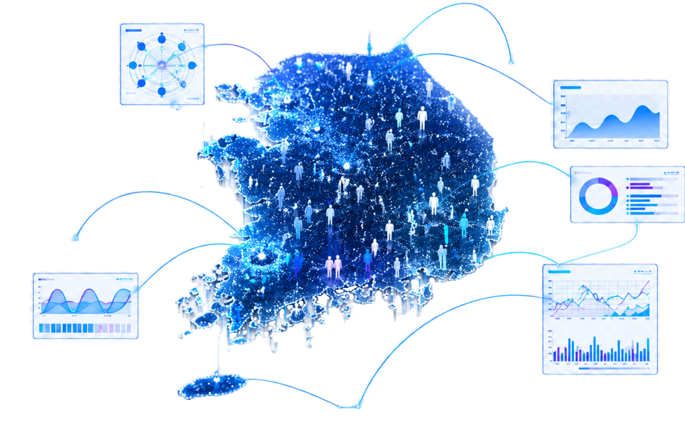

▲
PAIN POINT SOLUTION · 01
비용과 시간의
획기적 단축
월등히 낮은 비용으로 수만 명 대상 조사를 즉시 실행. 기존 수백만원, 수 주의 프로세스를 수만원·15분으로 단축합니다.
COST & SPEED
AI 가상 패널이 수만 명의 응답자를 시뮬레이션합니다.
현실은 단 한 번, 시뮬레이션은 수만 번 — 완벽한 시장성 검증 프로세스.

CA-IPF, PGM 모집단 설계 기술로 실제와 동일한 대한민국을 가상 공간에 세웁니다.
원하는 타겟 페르소나를 무한정 생성해 정량·정성 조사를 실시간 실행합니다.
IPF(반복 비례 가중법), PGM(확률 그래프 모델)로 대한민국 인구 구조를 완벽히 복제. 통계청 데이터 실시간 연동으로 특정 지역·코호트 패널을 즉시 생성합니다.
원하는 타겟 페르소나를 무한정 생성하여 정량·정성 조사를 실시간 실행합니다. 조사자의 사전 편향 없이 순수한 소비자 인사이트를 수집합니다.
스타트업부터 정부기관까지, 모든 의사결정 현장에 최적화된 시뮬레이션 솔루션을 제공합니다.
전 세계를 무대로, 시뮬레이션 그 이상의 가치를 실현해갑니다.
국제 학회 논문에서 검증된 방법론 기반으로
현실성·유사성·재현성을 달성합니다.
IPF(반복 비례 가중법), PGM(확률 그래프 모델)로 대한민국 인구 구조를 완벽히 복제. 통계청 데이터 실시간 연동으로 특정 지역·코호트 패널을 즉시 생성합니다.
메모리스트림 기술로 가상 패널이 맥락 기반의 일관된 반응을 보이도록 구현. SSR(Semantic Similarity Rating) 방법론으로 인간 응답과 95% 이상 일치하는 답변을 생성합니다.
수만 번의 반복 시뮬레이션으로 통계적 확실성 확보. RSS 방법론으로 Spearman Similarity 90% 이상의 정합성을 목표하며, 동일 조건에서 결과 편차를 최소화합니다.
비용·속도·신뢰도. 기존 리서치가 해결하지 못한 세 가지 문제를 AI 가상패널로 돌파합니다.
월등히 낮은 비용으로 수만 명 대상 조사를 즉시 실행. 기존 수백만원, 수 주의 프로세스를 수만원·15분으로 단축합니다.
COST & SPEED조사 시 가짜 답변을 하려는 심리를 AI 알고리즘으로 회피해 정확한 응답을 수집합니다. 95% 인간 응답 일치율이 이를 증명합니다.
DATA QUALITY기업 B2B 시장부터 공공 B2G, 최종적으로 선거/정치 시장(B2P)까지 순차적 점유 라인업. 단계별로 검증된 성장 전략을 실행합니다.
STRATEGY